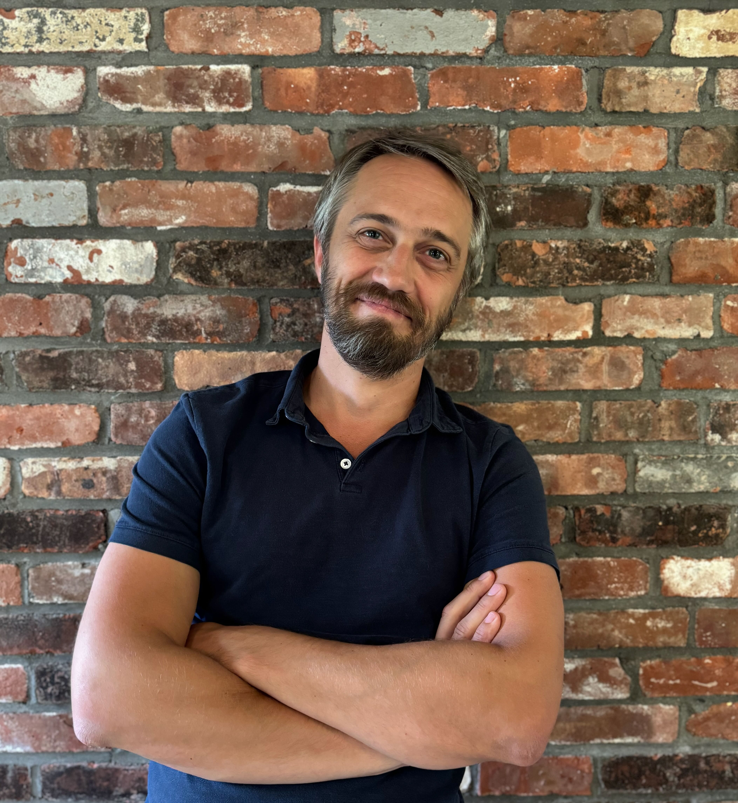

About
Research Areas
Dark Matter
My group maps the distribution of dark matter throughout the cosmos, including within the Milky Way galaxy. We are co-leading the Via Project, a new survey of the sky to detect and study the smallest dark matter structures with the ultimate goal of constarining the nature of dark matter.
Galaxy Formation
We study the formation and evolution of galaxies over cosmic time, from the earliest epochs to the present. We use a wide array of resources, including the James Webb and Hubble Space telescopes, large ground-based telescopes (including Magellan and the MMT) and large computing resources to simulate these processes. We have recently completed a large spectroscopic survey of the Milky Way - the H3 Survey - that traced the assembly history of the Milky Way over most of its history.
Stars & Stellar Populations
stars and stellar pops
Research Group
Current Members
- Ben Johnson (Research Scientist)
- Phill Cargile (Research Scientist)
- Vadim Semenov (Hubble & ITC Fellow)
- Scott Lucchini (ITC Fellow)
- Shelley Cheng (PhD Student)
- Vedant Chandra (PhD Student)
- Rebecca Woody (PhD Student)
- Abby White (PhD Student)
- Anya Phillips (PhD Student)
Former Members
- Dan Weisz (Associate Professor, UC Berkeley)
- Yuan-Sen Ting (Associate Professor, OSU)
- Phil Rosenfield (Microsoft Research)
- Jieun Choi (Senior Applied ML Scientist, Netflix)
- Ben Cook (Quantitative Researcher, Walleye Capital)
- Meng Gu (Assistant Professor, Hong Kong University)
- Josh Speagle (Assistant Professor, University of Toronto)
- Alexa Villaume (Postdoctoral Fellow, University of Waterloo)
- Joel Leja (Assistant Professor, Penn State University)
- Aaron Dotter (Research Associate Professor, Dartmouth College)
- Ana Bonaca (Staff Scientist, Carnegie Observatories)
- Ivan Cabrera-Ziri (Data Scientist, Vyoma)
- Sandro Tacchella (Assistant Professor, Cambridge University)
- Seth Gossage (CIERA Fellow, Northwestern University)
- Harshil Kamdar (Senior Scientist, Kairos Aerospace)
- Sirio Belli (Assistant Professor, University of Bologna)
- Rohan Naidu (Pappalardo & Hubble Fellow, MIT)
- Lieke van Son (Assistant Professor, Radboud University)
- Kareem El-Badry (Assistant Professor, Caltech)
- Jesse Han (Stanford Science Fellow, Stanford)
- MJ Park (Kavli Fellow, Cambridge University)
Contact
Office:
Center for Astrophysics, P-320
60 Garden St
Cambridge, MA, 02140
Email:
cconroy@cfa.harvard.edu
Prospective Students:
I will be happy to discuss research opportunities if you are admitted to our program, but I receive too many pre-admissions inquiries and cannot respond to them individually.